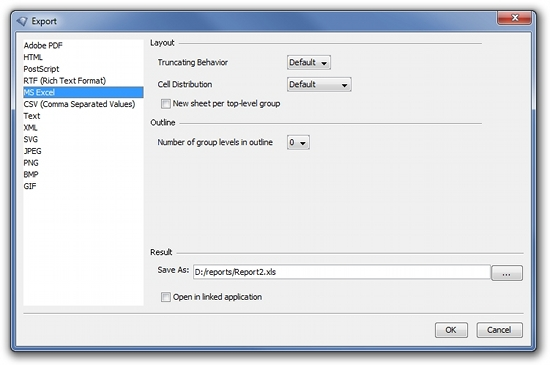

XLS Export
With the following properties you can configure the XLS export.

Truncating Behaviour
The parameter "celltruncate" specifies whether strings which are too long for their cell will be truncated or not. The default value is true.
Cell Distribution
The parameter "celldistribution" determines how to distribute text to Excel cells if the text does not fit a simple cell. Choose one of the following value:
- staticlayout - the text is displayed in the first row of the element. The width, background and border, if set, correspond to the design of the element. If the element contains multiple rows, they will be merged.
- oneline - the text is displayed in the first row of the element. The width, background and border, if set, correspond to the design of the element. If the element contains multiple rows, they are not merged.
- linebreak - the text, (as well as background and border, if set) are displayed in one single cell. Existing line breaks will split the text in several text lines within the cell.
- multicells - the text is split into multiple Excel cells. The number of required rows will be the same as number of lines in the text. The rows are not merged. Background and border, if set, are common to all lines of text.
- mergecells - the text is split into multiple merged Excel rows. Background and border, if set, are common for all lines of text.
- singlecell - the text is displayed in the first row of the element. The width, background and border, if set, correspond to the design of the element.
New sheet per top-level group
The parameter "firstgroupassheets" specifies whether a new sheet will be created for every instance of the top-most group or not. The default value is false.
Number of group levels in outline
The parameter "grouplevel" specifies how many group levels are to be shown in the outline of the excel sheet. A number between 0 and 7 is valid. The default value is: 0.